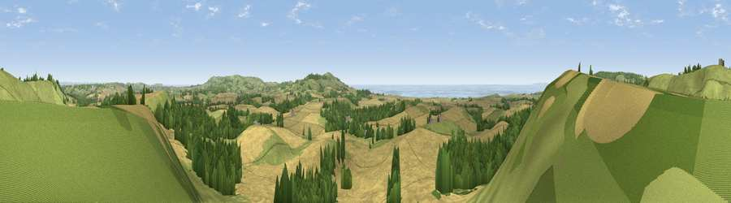

Viewpoint near Chillerton
#1589 in England · top 18% of its area beats it · near Chillerton · path 241 mWhere it is
The exact computed spot (SZ 47612 82626). Click the marker for map links.
Public access: the nearest public right of way is about 241 m away — the final stretch may cross private land. Computed from Natural England's CRoW access layer and OpenStreetMap rights of way — not the legal definitive map. Always verify locally.
The view, rendered

A 360° render of this exact spot computed from the terrain model, tree cover and land cover — summer colours, afternoon light, calibrated against photographs of famous viewpoints. Real trees, hedges and buildings will differ in detail.
The panorama
Grey silhouette: terrain skyline in each direction (720 bearings, Earth curvature and refraction included). Dashed green: skyline with trees (+15 m) and buildings (+8 m) as obstacles. Blue strip: how far the ground is visible on each bearing.
Where the view opens
Wedge length = distance to the farthest visible ground on that bearing (vegetation-aware). Rings at 10, 25 and 50 km.
What fills the view
45% cropland · 35% grassland · 16% woodland · 4% water
Angular shares of the visible panorama (visual magnitude), not map area. Landscape diversity 0.50 (0–1 Shannon).
Key numbers
More beautiful places nearby
The staircase of upgrades: each row has a higher view potential than everything closer. Driving times are estimates from straight-line distance, calibrated against real road routing — check an actual route before setting out.
| Place | Direction | Drive | Score |
|---|---|---|---|
| Viewpoint near Chillerton | N · 1 km | ~2 min | 78.3 |
| Limerstone Down | WNW · 4 km | ~9 min | 84.5 |
| St Catherines Hill | SSE · 6 km | ~12 min | 87.6 |
| Viewpoint near Chale | SSE · 7 km | ~14 min | 88.3 |
| Viewpoint near Niton | SSE · 7 km | ~14 min | 89.2 |
| Viewpoint near West Bexington | W · 93 km | ~117 min | 89.5 |
| The Knoll | W · 94 km | ~118 min | 91.0 |
50.64138, -1.32803 · source: osm peak · position refined by local search. Computed location — check access rights before visiting.